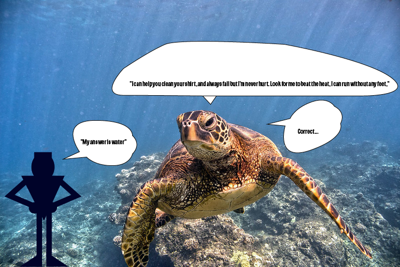

Jordan meets a sea turtle that can talk and tells him a riddle that he has to figure out before he can continue his journey.
Click here to swim to the cave you spotted
Credits: Photo made by Matthew Peralta, sound from https://www.bensound.com/royalty-free-music/track/psychedelic
"Green Sea Turtle" by Papahānaumokuākea Marine National Monument is marked with Public Domain Mark 1.0  .
.